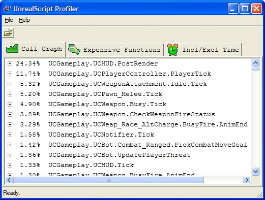

UDN
Search public documentation:
ScriptProfiler
日本語訳
中国翻译
한국어
Interested in the Unreal Engine?
Visit the Unreal Technology site.
Looking for jobs and company info?
Check out the Epic games site.
Questions about support via UDN?
Contact the UDN Staff
中国翻译
한국어
Interested in the Unreal Engine?
Visit the Unreal Technology site.
Looking for jobs and company info?
Check out the Epic games site.
Questions about support via UDN?
Contact the UDN Staff
UnrealScript Profiler
Document Summary: This is an overview on how to read the data displayed within the UnrealScript Profiler utility. Document Changelog: Created by Warren Marshall.Introduction
UnrealScript can be a confusing place, not only in terms of what is executing when but also in terms of what is taking the biggest bite out of your frame rate. This is where the profiler utility can help the most! Creating a Profile
You can start profiling at any time by enteringPROFILESCRIPT START at the console and stop it by typing PROFILESCRIPT STOP. The latter will create a .uprof file in your !(GameName)Game\Profiling\ folder which can then be viewed by the visualizer.
This profiling utility will become your best friend for finding performance bottlenecks within your UnrealScript classes.
Viewing a Profile
Start the script profiler executable (ueScriptProfiler.exe, located in the Binaries directory); and select Open from the File menu and open the .uprof file you wish to view. Note: The script profiler executable can be found in the Binaries directory of the UE3 or UDK distribution.Output
When you load a data file, you'll be presented with several tabs worth of information. They contain the information outlined below.Call Graph
Percentages numbers are total inclusive time with "self" representing total exclusive time if the function is not a leaf. The call graph data gets collected as a stream of function calls and time of function return for each call so unlike most call graph profilers the visualizer doesn't have to rely on the "average time assumption". Timing issues and bugs in the visualizer aside, the data should be entirely representative of the time spent executing script code.Expensive Functions
This view shows a tree of function calls sorted by absolute inclusive time (in usec) per call for the top nodes and absolute inclusive time per top node call for child nodes. This allows drilling down into expensive functions which is useful for improving worst case frame times. E.g. consider a function taking 10ms per call though only being called once every 100 frames. This means 0.1ms per frame which doesn't show up as a spike in regular profiling but is most likely very noticable during gameplay.Incl/Excl Time
The inclusive/ exclusive tab displays the inclusive/ exclusive percentages, number of calls and inclusive/ exclusive times per call in a compact fashion. All times are in usec (one millionth of a second).Spike Call Graph
The Spike Call graph tab shows a tree of function calls sorted by maximum inclusive time (in usec). The time represents the maximum time one call of the function took and is useful for identifying functions which caused frame time spikes.Downloads
- ut2004.uprof: Sample script profiling output from UT2004